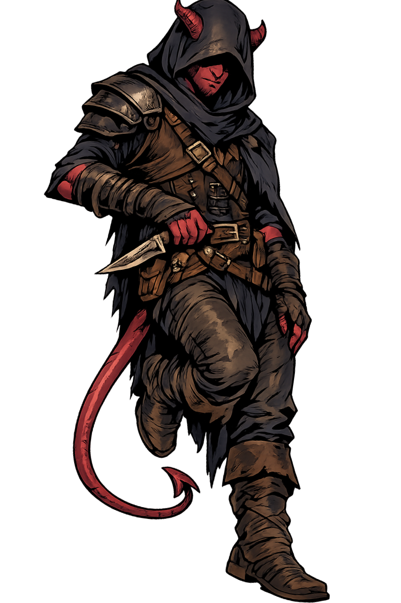
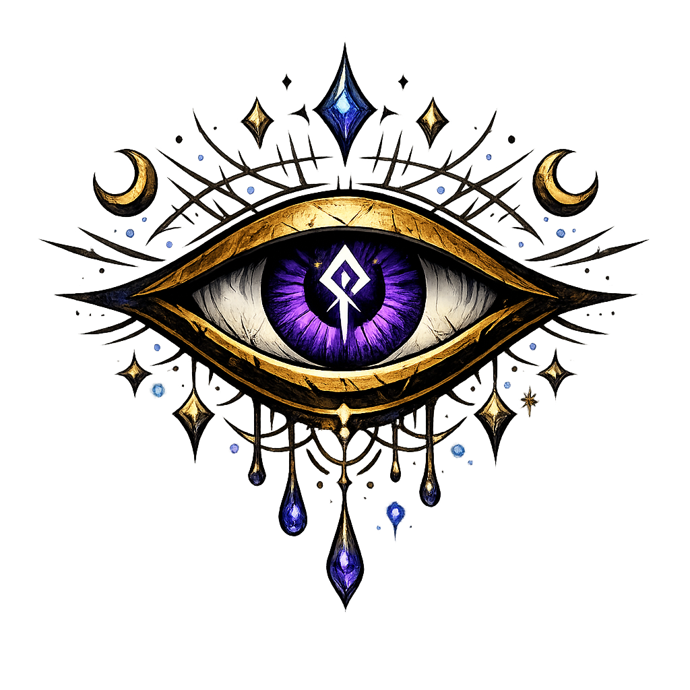
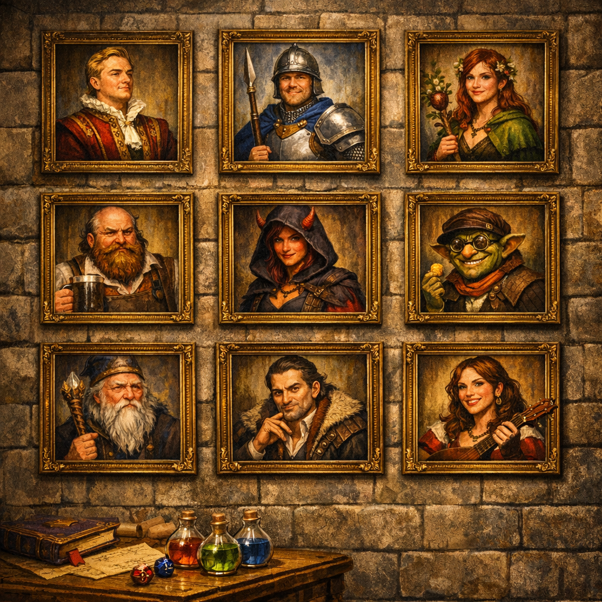
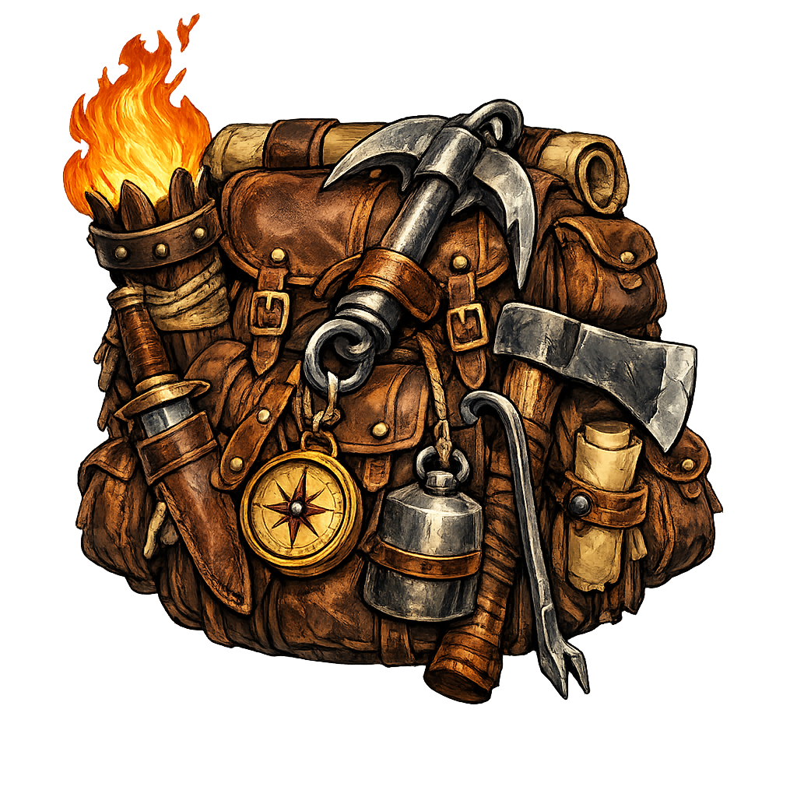
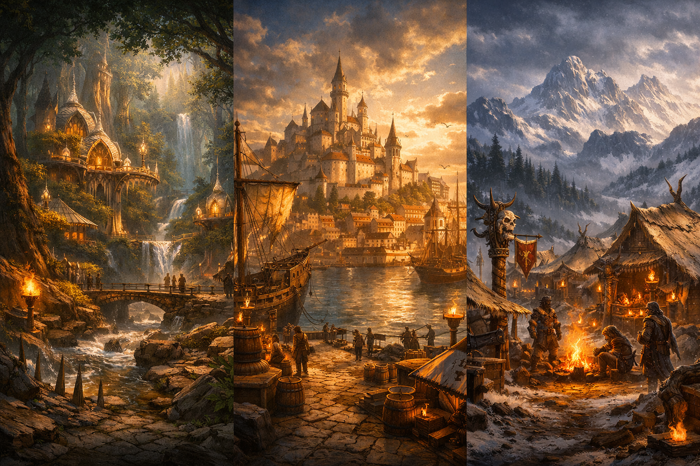
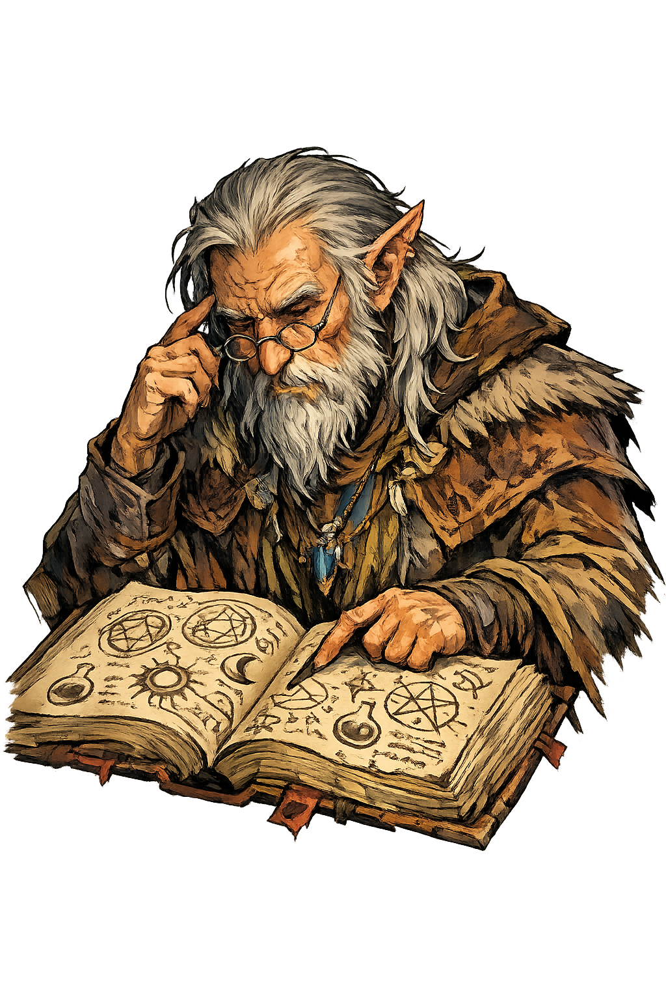
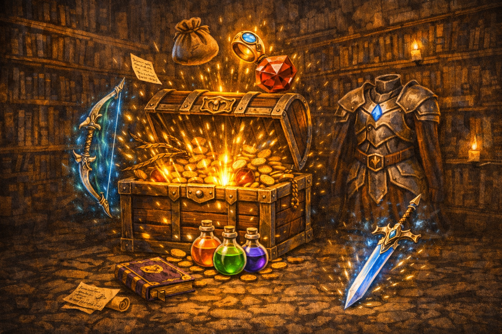
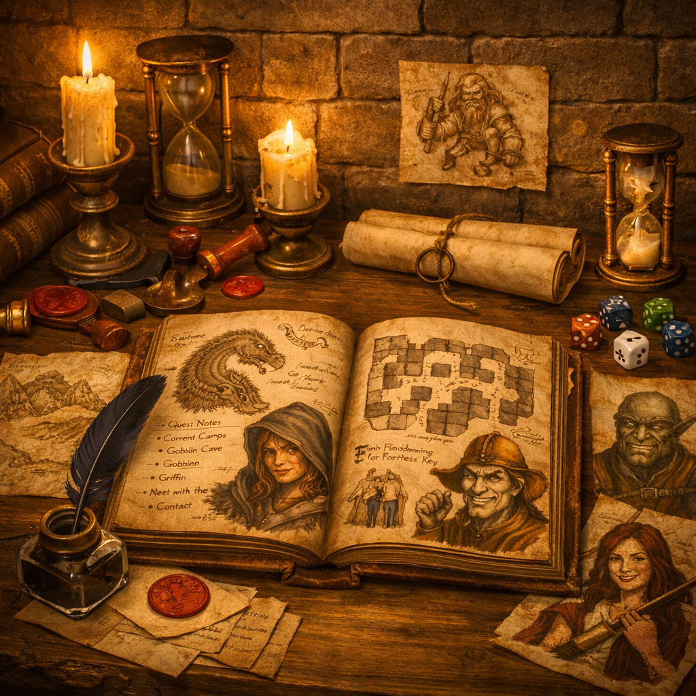

Character Sheet
Every adventurer’s tale begins with a name, a lineage, and a calling. LoneForge’s Character Sheet lets you shape your hero from the ground up — race, class, background, proficiencies, and all the traits that define their path. More ancestries and classes are being forged and will join the compendium soon.
As your hero grows, so will the sheet. A guided level‑up system is being crafted to walk you through features, proficiencies, and spellcasting progression. And for those who travel with beasts or steeds, a dedicated section for companions and mounts is on the horizon.

Bestiary
The world of LoneForge is already home to 217 creatures — and the list continues to grow. From humble beasts to fiends, constructs, undead, and more, the Bestiary gives you a broad arsenal of foes and encounters for your solo adventures.
Finding the right creature is effortless. Filter by Challenge Rating using precise CR ranges, or narrow your search by creature type to quickly locate beasts, fiends, monstrosities, and every other category in the compendium.
Clicking on any creature reveals its full stat block: abilities, traits, actions, reactions, and everything you need to run an encounter smoothly. Future updates will also bring creature illustrations, giving each entry a visual identity worthy of the worlds you explore.

NPC Generator
LoneForge’s NPC Generator gives life to the people who inhabit your world. With a single click, you can create a fully realized character: race, name, profession or role, disposition toward the player, defining traits, current objective, and even hidden secrets.
Every aspect of an NPC can be customized individually, allowing you to refine personalities, motivations, and story hooks to fit the needs of your adventure. Each generated NPC is saved automatically, so you can revisit them at any time without losing track of who they are.
NPCs can also be assigned to any building within a settlement, helping you populate taverns, guilds, temples, shops, and every corner of your world with characters who feel like they belong. A dedicated system for generating factions — and linking NPCs to their allegiances — is planned for a future update.
Oracle
The Oracle is the beating heart of solo play — the guide that shapes your story when no Dungeon Master is present. Here you can spark new quests, interpret events unfolding around your character, and let fate steer the narrative in unexpected directions.
Within the Oracle’s narrative tools lies the skill check system, fully linked to your Character Sheet. Choose the ability, set the Difficulty Class, and roll directly from the interface to resolve challenges as they arise in your adventure.
And when the Oracle’s answers aren’t enough, the Situation Table steps in. With hundreds of dynamic verbs and prompts, it helps you define scenes, complications, twists, and evolving story beats — ensuring your tale never stalls and always moves forward.



Procedural Tools
LoneForge’s procedural engine breathes life into the world around your hero. Cities, dungeons, and wilderness journeys can all be generated dynamically, each shaped by the environment, scale, and narrative tone you choose.
Cities can be forged in any size — from small frontier camps to sprawling metropolises. Each settlement is divided into districts such as mercantile, arcane, military, and more, each with its own events, vendors, and buildings appropriate to its role. You can also generate city‑wide random events or encounters, selecting the type of scenario you want to introduce to enrich your story.
Wilderness travel unfolds across multiple biomes, each with its own discoveries, encounters, and environmental challenges. Every day of travel can produce events tied to the terrain, and even resting at camp carries the possibility of unexpected happenings.
Dungeons are already fully functional, offering random encounters, traps, and treasure. A deeper system based on the 6d12 method is actively being developed to make exploration more dynamic, unpredictable, and alive.



Items
The Items Compendium gathers every tool an adventurer might need — weapons, armor, adventuring gear, potions, poisons, mounts, magic items, and much more. You can browse, filter, and search through the entire collection, viewing detailed descriptions for each entry.
When your hero needs treasure, the loot generator steps in. It creates level‑appropriate rewards divided into standard loot and boss loot, giving you meaningful progression and memorable finds.
Future updates will introduce a full system for crafting custom magic items, allowing you to forge unique artifacts tailored to your story.
Combat
The Combat Arena lets you create focused battle scenarios by selecting the enemies your hero will face. LoneForge manages initiative order, enemy behavior, attack types, and hit points, allowing you to run encounters smoothly and without bookkeeping.
The system is evolving to make combat more dynamic and reactive. Work is underway to introduce saving throws, improved enemy logic, and additional tactical elements that will bring battles closer to the feel of a full tabletop session.

Notes
The Notes section is the heart of your narrative — the place where your adventure truly becomes your own. As both player and Dungeon Master, this is where you chronicle discoveries, record important events, track NPCs, and shape the unfolding story.
Over time, your notes grow into a personal campaign journal: a living book of your travels, triumphs, mysteries, and the characters who define your journey. LoneForge gives you the tools to build a world worth remembering, one entry at a time.